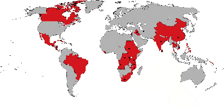

Primate’s World Relief & Development Fund
Report to General Synod
(click here
to download the complete report in Microsoft Word format)
Introduction
The Primate’s World Relief and Development Fund is a
response by Canadian Anglicans to the Gospel call to bear witness to God’s healing
love in a broken world.
Inspired by the vision of a spirit filled
community of hope, PWRDF walks together with partners in Canada and overseas to share in
the creation of a more just and peaceful world.
In joy and struggle, the Primate’s Fund
engages in development work, responds to emergencies, works to protect refugees and
educates and advocates for change.
"Give Us A Thirst For Justice"
This phrase summed up the PWRDF Strategic Plan for 1996 to 1998.
The plan identified five priority goals:
- deepen theological reflection
- strengthen partnerships with dioceses and parishes
- improve advocacy work on justice issues
- support community based development work
- undertake organizational development.

The PWRDF responded to emergency and refugee situations in
thirty four countries and supported development work in twenty eight countries.
|
The Full Report
|
The following people served on the PWRDF Committee 1996-1998:
Stephen Toope
Chairperson
Diocese of Montreal
Rosie Hyde
Diocese of Toronto
Stewart Payne
Diocese of Western Newfoundland
Warren Deacon
Diocese of Cariboo
Douglas Fenton
Diocese of New Westminster
Dirk Rinehart
Diocese of Kootenay
Philip Barnett
Diocese of Rupert’s Land
Marion Saunders
Armed Forces Ordinariate
Penelope Cummine
Diocese of Keewatin
Rod McDowell
Diocese of Niagara
James Merrett
Diocese of Quebec
Esther Wesley
Diocese of Moosonee
Monica McKay
Ang. Council of Indigenous Peoples
Jean Macliing
Philippines
Anivaldo Padilha
Brazil
Khumo Ntlha
South Africa |